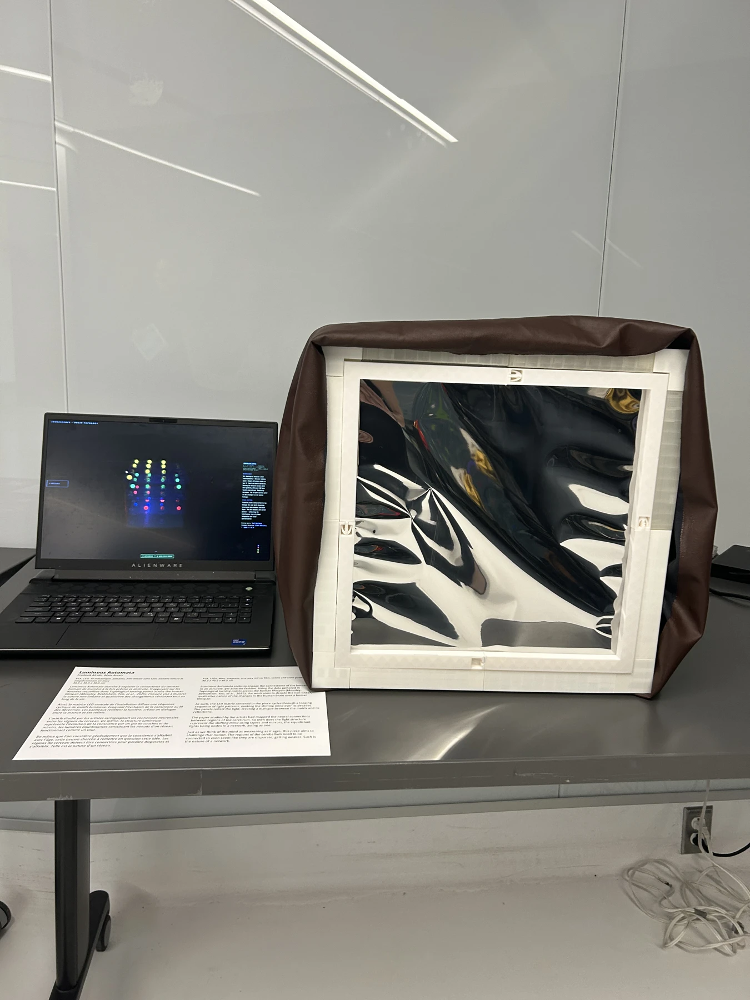
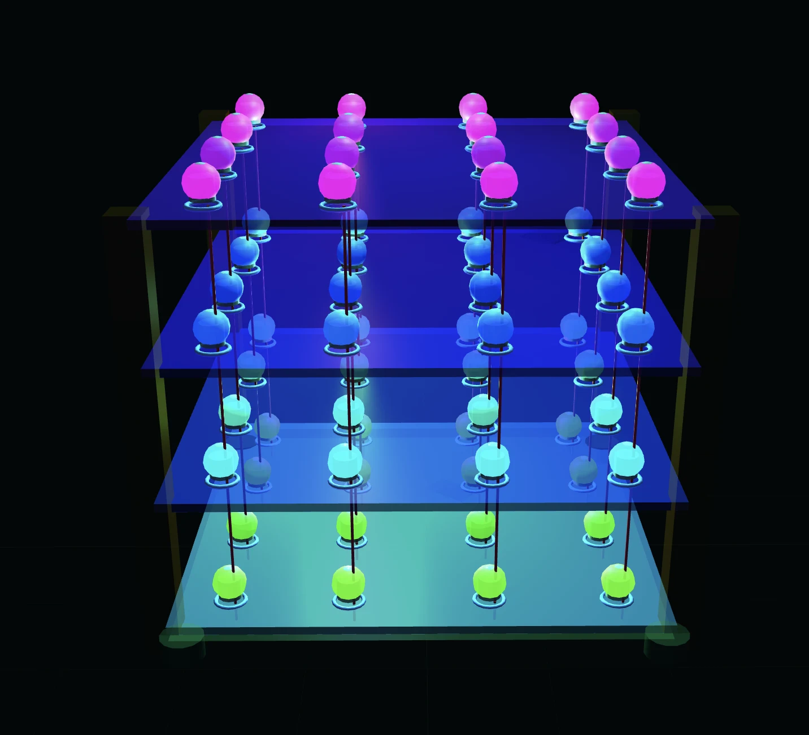

Physical computing / Project documentation
3D LED Box
A physical light installation and a browser-based exploration of light in three dimensions.
LED control / Physical computing / 3D visualization

01 / Physical build
Light as a physical experience.
The physical installation gives the LED work a tangible form. The enclosure, reflective surfaces, visible wiring, and changing light belong to the material side of the project.
From object to interface
The browser version provides a separate way to explore a three-dimensional LED matrix. Showing both versions makes it possible to see the physical installation and its digital interpretation together.
The photograph and videos on this page are original project media. The browser preview is a separate visualization.
02 / Original demonstrations
Inside the light installation.
Watch the physical LEDs in operation from two views.
03 / Browser visualization
Explore the digital version.
The online version presents a 4 × 4 × 4 LED matrix in three dimensions. Open the original browser project to explore the digital interpretation of the physical work.
Open interactive browser visualization